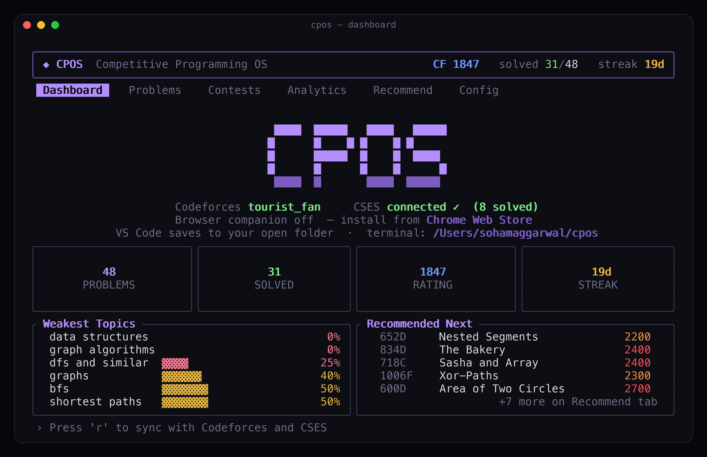

Terminal · core
Your CP command center
Browse every problem locally. Track rating, contests, weak topics, and what to grind next — keyboard-first, built in Rust. You don't open Codeforces to pick problems; you open CPOS.
Problem browser
Full catalog, search & filter
Recommendations
30 picks for weak tags
Contests
Live countdowns
Analytics
Rating graph & heatmap
